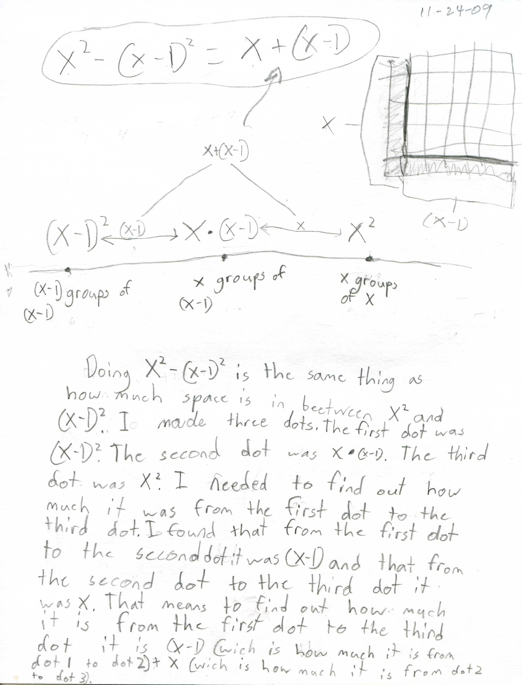
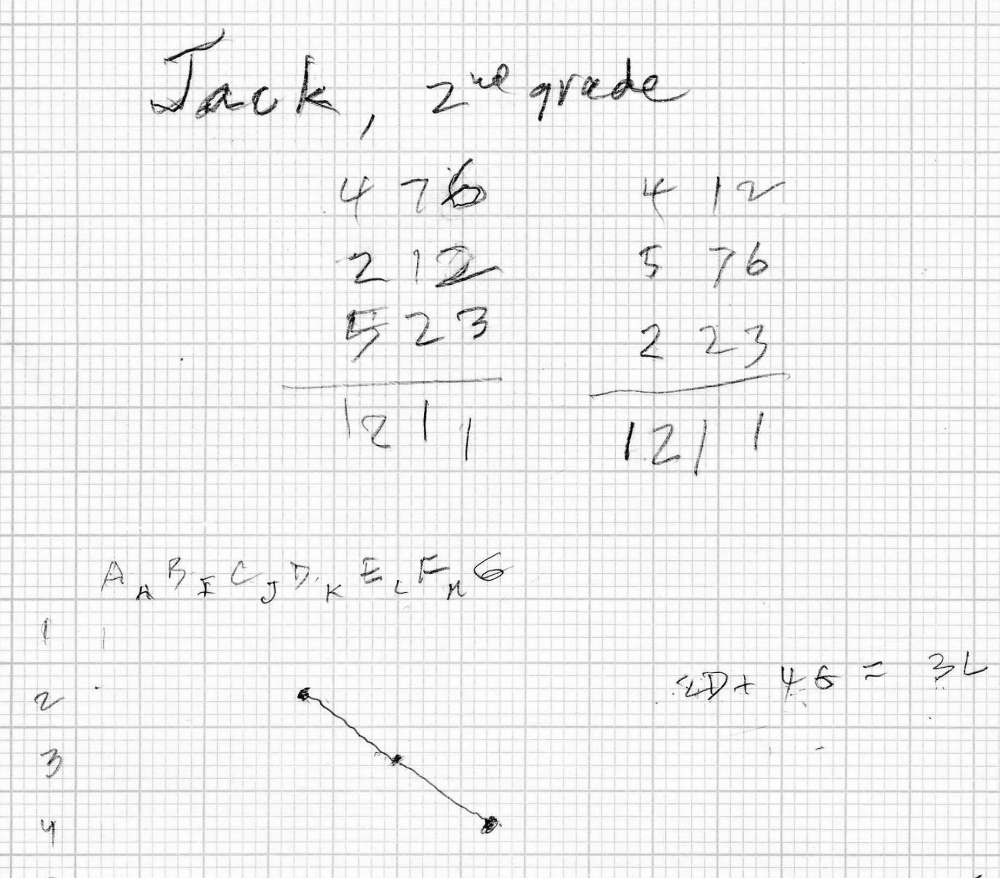
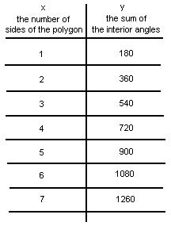

Geometry/various chapters
Anna's algebra & geometry
Anna, a 4th
grader, found the distance between 3 points. Don needed to really look at this, and
agreed that it worked. She had worked with her Mom on the diagram in the upper
right below to show that
is true for any x, an identity!

Fine job Anna!!
Don had never seen anything quite like this and was very excited about her work.
Jack invents new ways to look at mathematics
In 2nd grade he did these things, some arithmetic, and some geometry
He made a list of 3-digit numbers, then changed the position of the numbers in the hundreds place and found that the sum of the 3 numbers remained the same.

Then he invented a way to find the mid-point of a segment, whose end points were 2D and 4G. He found the mid-point to be 3L. Don thought that this was another way to look at what is normally taught in HS geometry classes!
In 3rd grade he just did this, about a square:

Fine work Jack!!
Again Don had never seen anything quite like this. These two student works are what makes Don's teaching so enjoyable! Jack managed to get the length, width, perimeter, area, number of sides and the diagonal of a square, in his number representation of the square!
Jack in 4th grade draws a penguin, then askes Don to make the picture with the graphs of equations! WOW!
7 May 2009---- a note from the Mom of 3 of Don�s students:You have made a huge difference in Joe�s life! Certainly his confidence and skills in math have increased- but your (and Marilyn�s) influence goes beyond that. You model for him an attitude and approach to life that he very much admires. I believe it really does �take a village� to raise a child. I feel mighty good that you both are part of Joe�s �village�- that you have been a part of all of our children�s village [see daughter Katy's work on infinite series, now at college]. Thank you! Bernadette
Paul, a 3rd grader, finds a pattern in the sum of the interior angles of a polygon
I was working with Paul and a rotagram, to find the sum of the angles of a polygon. Paul had difficulty with the idea of rotating clockwise and counterclockwise. Later when his Dad came in he told me that they have all digital clocks in their home, except for one. So Paul was not sure how to read a regular clock. We got through it.
We made a table of values where x = the number of sides of the polygon and y= the sum of the interior angles.

Paul noticed that the 360� was one circle and 540� was 1 1/2 circles.
In looking for a pattern in the table he made 2 observations. "In the 100's, odd numbers are getting higher", and "In the 10's even numbers are getting lower"
17 June 2008 Don received this note from Paul [above], who came to Don from 3rd grade through 12th grade:As of this writing in 2010, Paul is a sophomore in college.
Using the Fibonacci nos. to make a golden rectangle and spiral+ (chapter 7).(View Critobal Vila's beautiful film "Nature by Numbers" (Fibonacci)
Sheri reduces the size of a shell with a pantograph
Roxanna enlarges a picture of Bugs Bunny with a pantograph
Anna uses a rotogram and says the sum of the angles of a triangle is not always 180o
3D multiplication tables made by Don
Sara finds the area of a triangle
Emily finds the area and perimeter of the snowflake curve, using inf. series
polygonal numbers + Pascal's triangle
Kohler finds Pi (see Map)
Math from Bubbles shortest telephone lines-path between cities, with angles of 120o
Geoboard magic by 3 of Don's students, who allso made a graph in 3D of Pick's Theorem
Irisa finds the area within shapes on a geoboard
Townes works with Tangrams
The measures of angles in a circle- with one relationship
On a circular geoboard Michael and Christie find the # of degrees in an angle formed by the intersection of 2 chords
Geometric transformations -the fine Java applet by IES on Don's website, problems from Don's book "Changing Shapes With Matrices" and Sheri's work. See Lori Johnson Morse's http://demonstrations.wolfram.com/ChangeTheDogMatrixTransformations/ based on Don's book. See rotations with matrices. Also see Nanako's work below.
Tessellations- using gummed shapes from Scotland, and M.C. Esher's ideas (see
Abe's work)
The Soma Cube; students make their own set from white Cuisenaire rods (see Olivia's work).
Then Erin made the cube16 different ways at erink
M. C. Escher Kaleidocycles
Using Cuisenaire Rods to build patterns (see
Ch 13 and Genny doubles the size of a dog.
Using the Fibonacci nos. to make a golden rectangle (chapter
7).
Area of rectangles with a constant perimeter of 20 (Kelda)
See Map)
Perimeter of rectangles with constant area of 36 (ch.14) (See Map, Maya)
The golden spiral from a pentagon (CH.7)
Start the binomial expansion with
sqares and cubes (Ch. 9) See Map
Find the slope of a ramp (or mountain,..)->slope of curves -> the
derivative (ch. 14 and slope
on map)
Michael's math in science- work with
hinged mirrors & # of images vs the angle between the mirrors, and showing
his diagram of the light rays bouncing off the mirrors to get the images and the
resultant graph(ch. 6) See Map
How lengths, squares and cubes grow (ch. 6)
Finding the area and perimeter of the snowflake curve (see
Emily's work)
How the Nautilus shell grows (ch. 6 and Deryn's work)
Similar shapes within the nautilus, the eye test (ch. 11)
Rotagram- to see which angles are equal and to add angles of a polygon (from
Scotland)- see Anna's work
Volume Relationship Set- water poured into shapes to find ratio of volume of
pyramid/volume of cube and 2 other ways (see
Sheri's work)
Area within shapes on a geoboard, leads to integral!- (see Ch.13)- also see Geoboard
Magic
Sticks and rubber bands (See NCTM "Readings in Geometry"; 1970; pp.
3-8).
Moving a graph, then writing the equation (linear, parabola, circle, ellipse, hyberbola, exponential,
sine wave)
Nanako's
work on Changing Shapes With Matrices in the summer of '08 when she came a
second summer week from Japan
They then worked on geometric transformations with matrices (see Don's book Changing Shapes With Matrices, which Don gave to Nanako):
Don started Nanako with the "grocery-store" arithmetic to multiply the matrices. Nanako went to the grocery store on Monday to buy 3 boxes of Blueberries, 2 boxes of Strawberries and 4 packages of Grapes. This is shown in the row matrix on the left. The Price matrix shows the price of the Blueberries is 10 cents per box (all prices are in cents to make the multiplication simple), the price of the Strawberries 50 cents per box, and the price of the Grapes 60 cents per package.
The question is how much will Nanako spend on Monday? And how does she find this? She said 3x10 + 2x50 + 4x60 = 370 cents. In other words, one goes to the right in the row matrix and down in the column matrix, multiplying the number of each item by the price of the item, then adding the products.

Then Don added Tuesday to the row matrix, and Nanako found the total cost for Monday and Tuesday.
Once Nanako could multiply the matrices, Don made the black "dog" on the graph paper below, showing its 9 points. He then had Nanako choose 4 numbers from -1, 0 and 1 only, for her transformation matrix (2 rows x 2 columns); she chose {0, 1 and 1, -1}. The her job now was to take each point on the dog, like point #1 at (1,1), make this a matrix [ 1 1 ] and multiply this matrix by her transformation matrix (remember going right on the 1st matrix and down the first column in the 2nd matrix; 1x0 + 1x1 = 1 ; then going right in the first matrix and down the 2nd column in the 2nd matrix 1x1 + 1x -1 = 0 to get [ 1 0 ], the new point #1 at (1,0). So each point on the old "dog" goes to a new point to get the transformed "dog". How was the old dog changed?

Fine work Nanako!
Tara shows the record rainfall in Champaign August 11-12, '93
How many different angles and how many different triangles are within a regular pentagon (chapter
7) Powers of Phi on MAP
The golden spiral from a pentagon. Chapter 7
How the Nautilus shell grows (ratio of radii 360�
apart, measuring the angle formed by the tangent and radius at a point on the
curve) and other spirals at http://www.mathman.biz/html/colorspirals.html
Similar shapes within the nautilus (chapter 11)
Finding the ratio of the volume of a pyramid to the volume of a cube with the same base and height (different ways)
Find the slope of a ramp (or mountain, or straight lines..) leads slopes and the derivative
Graphing Lissajous figures (http://www.mathman.biz/html/iansinewaves.html and http://www.mathman.biz/html/trig2.html )
Rotating a triangle http://www.mathman.biz/html/rotate_a_triangle_90cw.html
Rotations with Matrices at http://www.mathman.biz/html/rotations_with_matrices.html )
Graph complex nos. like (2+i)n http://www.mathman.biz/html/anae.htmlStatistics and new graphing methods; a great talk by Hans Rosling http://www.ted.com/talks/hans_rosling_asia_s_rise_how_and_when.html